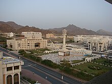

Economy of Oman
|  | |
| Currency | Omani rial (OMR) |
|---|---|
| US$1 ≈ 0.3845 OMR | |
| Calendar year | |
Trade organisations | WTO and GCC |
Country group | |
| Statistics | |
| Population | |
| GDP | |
| GDP rank | |
GDP growth |
|
GDP per capita | |
GDP per capita rank | |
GDP by sector | agriculture 1.7% industry 45.2% services 53% (2017 est.)[6] |
| 0.95% (2023)[4] | |
Population below poverty line | NA% |
| 30.72 (2010)[7] 0.30 (2023)[8] | |
| |
Labour force | |
| Unemployment | |
Main industries | crude oil production and refining, natural and liquefied natural gas (LNG) production; construction, cement, copper, steel, chemicals, optic fiber |
| External | |
| Exports | |
Export goods | petroleum, reexports, fish, metals, textiles |
Main export partners |
|
| Imports | |
Import goods | machinery and transport equipment, manufactured goods, food, livestock, lubricants |
Main import partners |
|
FDI stock | |
Gross external debt | |
| Public finances | |
| Revenues | $157.02 billion (2019 est.)[6] |
| Expenses | $163.41 billion (2019 est.)[6] |
| Standard & Poor's:[15] AAA (T&C Assessment) Outlook: Stable[16] Moody's:[16] Aaa Outlook: Fitch:[16] AAA- Outlook: negative | |
All values, unless otherwise stated, are in US dollars. | |
{kind=link}
The economy of Oman is mainly centered around its oil sector, with fishing and trading activities located around its coastal regions. When oil was discovered in 1964, the production and export increased significantly. The government has made plans to diversify away from oil under its privatization and Omanization policies.[17] This has helped raise Oman's GDP per capita continuously in the past 50 years. It grew 339% in the 1960s, reaching a peak growth of 1,370% in the 1970s. Similar to the pricing of all other commodities, the price of oil is subject to significant fluctuations over time, especially those associated with the business cycle. A commodity's price will rise sharply when demand, like that for oil, outpaces supply; meanwhile, when supply outpaces demand, prices will fall.
It scaled back to a modest 13% growth in the 1980s and rose again to 34% in the 1990s.[18] Oman joined the Gulf Cooperation Council in 1981 with the aim of establishing a customs union, a common market and a common currency.[19][20]
Petroleum is responsible for 64% of all export revenue, 45% of government income, and 50% of GDP. Given that it accounts for half of the Sultanate of Oman's GDP, the petroleum products industry is one of the most significant in the Omani economy.
Oman's economy heavily relies on cement, a vital component of the construction industry. Cement plays a crucial role in facilitating urbanization, infrastructure development, and overall economic expansion. The cement industry contributes to Oman's economy by providing employment opportunities, both directly and indirectly. It also generates revenue through taxes and fees and contributes to the development of related sectors, such as logistics and transportation.
Macro-economic trend
[edit]This is a chart of trend of the gross domestic product and gross domestic product per cap das cap of Oman at market prices by the International Monetary Fund.[21]
| Year | Gross Domestic Product (in millions US$) |
Per Capita Income (US$) |
Per Capita Income (as % of USA) |
|---|---|---|---|
| 1980 | 6,342 | 4,674 | 38.16 |
| 1985 | 10,395 | 6,129 | 34.65 |
| 1990 | 11,686 | 6,341 | 27.33 |
| 1995 | 13,803 | 6,355 | 22.84 |
| 2000 | 19,450 | 8,097 | 22.97 |
| 2005 | 30,905 | 11,806 | 27.70 |
| 2010 | 58,814 | 23,351 | 49.88 |
| 2015 | 81,550 | 24,024 | 43.03 |
Overview
[edit]{kind=link}
Oman liberalised its markets in an effort to accede to the World Trade Organization (WTO) and gained membership in 2000.[22] The Director of the Sultanate of Oman's delegation to the WTO is Hilda al-Hinai.[23] Further, on 20 July 2006 the U.S. Congress approved the US-Oman Free Trade Agreement. This took effect on 1 January 2009, eliminating tariff barriers on all consumer and industrial products. It also provides strong protections for foreign businesses investing in Oman.[22]
The government also undertook some important policy measures during 2018 with the establishment of a commercial arbitration center, the adoption of a new commercial companies' law, and a further streamlining of licensing processes through Invest Easy in order to improve the business and investment climate and promote private sector-led growth in the Sultanate.
Oman's economy and revenues from petroleum products have enabled Oman's dramatic development over the past 50 years. Notably however, Oman is not a member of OPEC, although it has coordinated with the group in recent years.[24]
{kind=link}
Oil was first discovered in the interior near Fahud in the western desert in 1964. Petroleum Development Oman (PDO) began production in August 1967. The Omani Government owns 60% of PDO, and foreign interests own 40% (Royal Dutch Shell owns 34%; the remaining 6% is owned by Compagnie Francaise des Petroles [Total] and Partex). In 1976, Oman's oil production rose to 366,000 barrels (58,000 m³) per day but declined gradually to about 285,000 barrels (45,000 m³) per day in late 1980 due to the depletion of recoverable reserves. From 1981 to 1986, Oman compensated for declining oil prices, by increasing production levels to 600,000 b/d. With the collapse of oil prices in 1986, however, revenues dropped dramatically. Production was cut back temporarily in coordination with the Organization of Petroleum Exporting Countries (OPEC), and production levels again reached 600,000 b/d by mid-1987, which helped increase revenues. By mid-2000, production had climbed to more than 900,000 b/d where they remain. Natural gas reserves, which increasingly provide the fuel for power generation and desalination, stand at 18 trillion ft³ (510 km3). The Oman LNG processing plant located in Sur was opened in 2000, with production capacity of 6.6 million tons/YR, as well as unsubstantial gas liquids, including condensates.
Oman's 10th five-year plan (2020–2025) is the first implementation plan of Vision 2040,[25] and will focus its efforts towards achieving economic diversification.[26] The plan for economic diversification aims to move Oman away from the oil-and-gas-based sources of income, and has earmarked five sectors that have high growth potential and economic returns. These are agriculture and fisheries, manufacturing, logistics and transport, energy and mining, and tourism.
According to the Central Bank of Oman's Annual Report 2018,[27] the Omani crude oil price averaged at US$69.7 a barrel in 2018 as compared to US$51.3 per barrel during 2017. The recovery in oil prices also contributed to growth in non-oil economic activities, reflecting inter-linkages, although the dependency of non-oil activities on oil activities has somewhat weakened in the last few years.[28]
According to the World Bank growth is expected to increase over 2020–21, driven in part by a large increase in gas production from the new Khazzan gas project, and infrastructure spending plans in both oil and non-oil sectors.[29] Notably, with Khazzan phase-I becoming operational, the natural gas under the petroleum sector is also emerging as a significant contributor to the Omani economy, with BP committing to invest US$16 Billion developing the field.[30] Meanwhile, the Special Economic Zone Authority of Duqm (SEZAD) attracted $14.2 billion worth of investments in the form of usufruct agreements signed till the end of 2018.[31] With a land area of 2,000 km2 and 70 km of coastline along the Arabian Sea, the Duqm Special Economic Zone is the largest in the Middle East and North Africa region and ranks among the largest in the world. Duqm is an integrated economic development composed of zones: a sea port, industrial area, new town, fishing harbor, tourist zone, a logistics center and an education and training zone, all of which are supported by a multimodal transport system that connects it with nearby regions.[32]
On the fiscal front, government expenditure also increased noticeably in 2018 due to higher spending on oil & gas production, defence, subsidies and elevated interest payments. The government debt also increased to RO 14,492 in 2018 – with the debt to GDP ratio expected increased to 58 percent by 2020,[33] leading to constraints on the ability of fiscal spending to support growth and raising sustainability concerns.
Omanisation
[edit]The Omanisation programme has been in operation since 1999, working toward replacing expatriates with trained Omani personnel. The goal of this initiative is to provide jobs for the rapidly growing Omani population. The state has allotted subsidies for companies to hire local employees not only to gradually reduce reliance on foreign workers but also to overcome an overwhelming employment preference on the part of Omanis for government jobs.[34]
By the end of 1999, the number of Omanis in government services exceeded the set target of 72%, and in most departments reached 86% of employees. The Ministry has also stipulated fixed Omanisation targets in six areas of the private sector. Most companies have registered Omanisation plans. Since April 1998 a 'green card' has been awarded to companies that meet their Omanisation targets and comply with the eligibility criteria for labour relations. The names of these companies are published in the local press and they receive preferential treatment in their dealings with the Ministry. Academics working on various aspects of Omanisation include Ingo Forstenlechner from United Arab Emirates University and Paul Knoglinger from the FHWien.[citation needed]
Omanisation, however, in the private sector is not always successful. One of the reasons is that jobs are still filled by expatriates because of the lower wages. Studies reveal that an increasing number of the job openings in the private sector pay the official minimum salary for nationals, which is an unattractive employment prospect for the locals.[35] There is also the problem of placing Omani workers in senior positions due to the fact that a significant chunk of the workforce is composed of young and inexperienced workers.[36]
Training and Omanisation
[edit]In order to meet the training and Omanisation requirements of the banking sector, the Omani Institute of Bankers was established in 1983 and has since played a leading role in increasing the number of Omanis working in the sector. The Central Bank monitors the progress made by the commercial banks with Omanisation and in July 1995 issued a circular stipulating that by the year 2000, at least 75% of senior and middle management positions should be held by Omanis. In the clerical grades 95% of staff should be Omanised and 100% in all other grades. At the end of 1999, no less than 98.8% of all positions were held by Omanis. Women made up 60% of the total. During 2001 the percentage of Omanis employed at senior and middle management levels went up from 76.7% to 78.8%. There was a slight increase in the clerical grade percentage to 98.7%, while the non-clerical grades had already reached 100% Omanisation in 1998. The banking sector currently employs 2,113 senior and middle managers supported by 4,757 other staff.[citation needed]
The Ministry has issued a decision regulating tourist guides, who in future will be required to have a license. This Ministerial decision aims at encouraging professionalism in the industry as well as providing career opportunities for Omanis who will be encouraged to learn foreign languages so as to replace foreign tour guides. In January 1996, a major step forward in the training of Omanis in the hotel industry came with the opening of the National Hospitality Institute (NHI). The institute is a public company quoted on the Omani Stock exchange. In February 1997, the first batch of 55 male and female trainees, sponsored by the Vocational Training Authority, were awarded their first level certificates and were given on-the-job training in several hotels. In May 1999, the fourth batch of 95 trainees obtained their NVQs, bringing the number of Omanis trained by the institute to around 450. Omanis now make up 37% of the 34,549 employees in the hotel and catering business, which exceeds the Omanisation target of 30% set by the Government. The NHI has also trained catering staff from the Sultan's Armed Forces and has launched a two-year tour guide course, which includes language training, safe driving, first aid and a knowledge of local history and geography.[citation needed]
Investment
[edit]The stock market capitalisation of listed companies in Oman was valued at $15,269 million in 2005 by the World Bank.[37]
See also
[edit]References
[edit]- ^ "World Economic Outlook Database, April 2019". IMF.org. International Monetary Fund. Retrieved 29 September 2019.
- ^ "World Bank Country and Lending Groups". datahelpdesk.worldbank.org. World Bank. Retrieved 29 September 2019.
- ^ "Population, total - Oman | Data".
- ^ a b c d e "World Economic Outlook Database, April 2024". IMF.org. International Monetary Fund. Retrieved 4 May 2024.
- ^ Rabah, Arezki; Daniel, Lederman; Amani, Abou Harb; Nelly, El-Mallakh; Yuting, Fan; Asif, Islam; Ha, Nguyen; Marwane, Zouaidi (9 April 2020). Middle East and North Africa Economic Update, April 2020 : How Transparency Can Help the Middle East and North Africa. World Bank. p. 10. ISBN 9781464815614. Retrieved 10 April 2020.
{{cite book}}:|website=ignored (help) - ^ a b c d e f g h "The World Factbook- Oman". Central Intelligence Agency. Retrieved 20 May 2018.
- ^ "Urban - Gini index - Omani - Total". The National Centre for Statistics and Information, Sultanate of Oman. Retrieved 20 May 2018.
- ^ "Socioeconomic Indicators - Oman | Statista Market Forecast". Statista. Retrieved 1 January 2024.
- ^ a b "Human Development Report 2023/2024" (PDF). United Nations Development Programme. 13 March 2024. Archived (PDF) from the original on 13 March 2024. Retrieved 15 June 2024.
- ^ "Labor force, total - Oman". data.worldbank.org. World Bank. Retrieved 23 January 2020.
- ^ "View Oman's Unemployment Rate from 1991 to 2017 in the chart". CEIC. Retrieved 20 May 2018.
- ^ a b "Oman". Oec - the Observatory of Economic Complexity. The Observatory of Economic Complexity. Retrieved 20 May 2018.
- ^ "Export Partners of Oman". The Observatory of Economic Complexity. Retrieved 9 March 2024.
- ^ "Export Partners of Oman". The Observatory of Economic Complexity. Retrieved 9 March 2024.
- ^ "Sovereigns rating list". Standard & Poor's. Retrieved 26 May 2011.
- ^ a b c Rogers, Simon; Sedghi, Ami (15 April 2011). "How Fitch, Moody's and S&P rate each country's credit rating". The Guardian. Retrieved 31 May 2011.
- ^ "Oman". Retrieved 29 October 2019.
- ^ Oman Energy Policy, Laws and Regulations Handbook Volume 1 ISBN 978-1-329-07676-1 p. 113
- ^ "Economic Cooperation". www.gcc-sg.org. Retrieved 30 June 2022.
- ^ "The Unified Economic Agreement 1981". www.gcc-sg.org. Retrieved 30 June 2022.
- ^ "Report for Selected Countries and Subjects". Retrieved 8 May 2018.
- ^ a b Chemical & Engineering News, 5 January 2009, "U.S.-Oman pact expands Free Trade", p. 18
- ^ Matani, Ali Al (29 May 2019). "How can private sector benefit from WTO?". Oman Observer. Retrieved 23 October 2020.
- ^ "Oman says OPEC+ likely to extend supply curb deal". euronews. 11 November 2019. Retrieved 25 December 2019.
- ^ Vision 2040 2040.om [dead link]
- ^ "Oman's next 5-year plan to focus on Tanfeedh goals". Times of Oman. 14 December 2019. Retrieved 25 December 2019.
- ^ "Central Bank of Oman: Annual Report 2018" (PDF). cbo.gov.om. Economic Research & Statistics Department. Retrieved 29 June 2022.
{{cite web}}: CS1 maint: others (link) - ^ "Central Bank of Oman Annual Economic Report 2018". Central Bank of Oman.
- ^ "World Bank Oman Economic Outlook October 2019" (PDF). Retrieved 1 January 2024.
- ^ "BP Oman to invest $16bn for developing Khazzan Gas Project". Times of Oman. 25 February 2019. Retrieved 25 December 2019.
- ^ Observer, Oman (23 July 2019). "Duqm zone attracts $14.2bn investments". Oman Observer. Retrieved 25 December 2019.
- ^ "Duqm: Special Economic Zone Authority" (PDF). duqm.gov.om. Retrieved 29 June 2022.
- ^ "Oil Keeps Oman on Debt Binge With $6.2 Billion Plan for 2019". Bloomberg. 2 January 2019.
- ^ Ayalon, Ami (1993). Middle East Contemporary Survey, Volume Xv: 1991. Boulder: Westview Press. pp. 602–603. ISBN 0813318696.
- ^ Schlumberger, Oliver (2007). Middle East Contemporary Survey, Volume Xv: 1991. Stanford, CA: Stanford University Press. p. 157. ISBN 9780804757768.
- ^ Ayalon, p. 603.
- ^ "Data - Finance". 5 December 2006. Archived from the original on 5 December 2006. Retrieved 29 June 2022.
- Oman dfat.gov.au
External links
[edit] Definitions from Wiktionary
Definitions from Wiktionary Media from Commons
Media from Commons News from Wikinews
News from Wikinews Quotations from Wikiquote
Quotations from Wikiquote- Texts from Wikisource
 Textbooks from Wikibooks
Textbooks from Wikibooks Resources from Wikiversity
Resources from Wikiversity
Government
[edit]- Ministry of Information
- Ministry of Foreign Affairs
- Ministry of Tourism
- Ministry of National Economy
- Ministry of Commerce & Industry
- Central Bank of Oman
- Oman Chamber of Commerce and Industry
- Omani Centre for Investment Promotion
- Muscat Securities Market
- Public Establishment for Industrial Estates
- Al-Mazyunah Free Zone
- Ministry of Finance
- State General Reserve Fund
- Oman Tender Board
- State Audit Institute
- Oman Commercial Office in Dubai
- Ministry of Manpower
- Ministry of Oil & Gas
- Ministry of Civil Service
Other
[edit]| Sovereign states |
|
|---|---|
| States with limited recognition | |
| Dependencies and other territories | |
Petroleum industry in Asia | |
|---|---|
| Sovereign states |
|
| States with limited recognition | |
| Dependencies and other territories | |